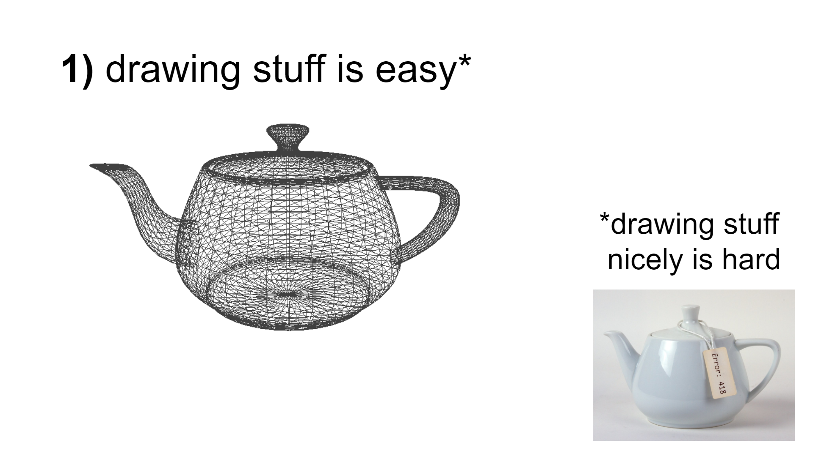
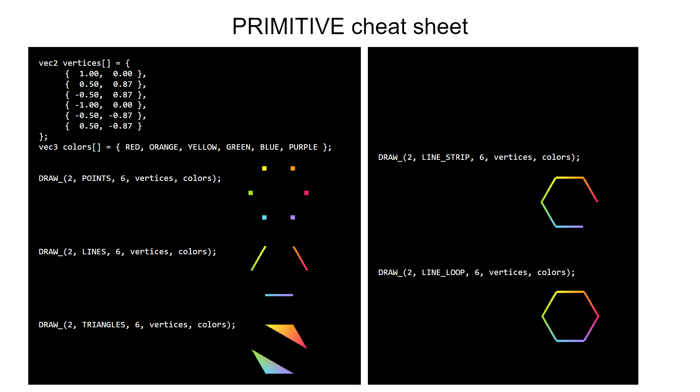

Instructor: James Bern
Dates: Jan 10, 2022 - Jan 14, 2022
Time: 10:00am - 11:00am Lecture, 11:00am - 12:00pm Lab
Take this class to learn how to write your own visualizations and simulations (useful for robotics and beyond).
In lecture you will learn new concepts and programming techniques.
In lab you will visualize and simulate robots from the ground up using data-oriented C/C++ code.
Our code will be small, simple, and compile in about one second.
Prerequisites
6.0001 + 6.0002, or equivalent experience.
Familiarity with C or C++ (or the ability to quickly pick up the basics)
Note: Labs will be open-ended, with plenty to learn regardless of prior experience. If you are an expert, there will still be new topics and techniques for you to pick up. If you are relatively new to C/C++, the course should still be accessible and useful :)


click to enlarge sample slides
Day 0: Data-Oriented Introduction to C/C++
Lab: Hello World Console Visualizer
Day 1: Interactive Visualization with DRAW_(...) and DRAG_(...)
Lab: OpenGL boids Simulation
Day 2: Kinematics
Lab: Forward Kinematics of a Robot Arm
Day 3: Gradient-Based Optimization
Lab: Inverse Kinematics of a Robot Arm
Optional Lab: Computational Design of Jansen's linkage
Day 4: Soft Body Physics
Lab: Forward Simulation of a Soft Robot